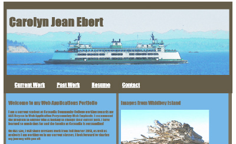
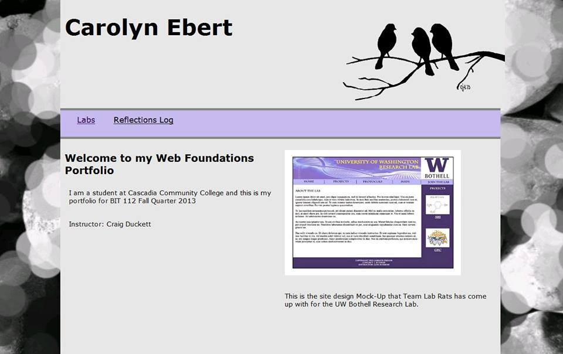
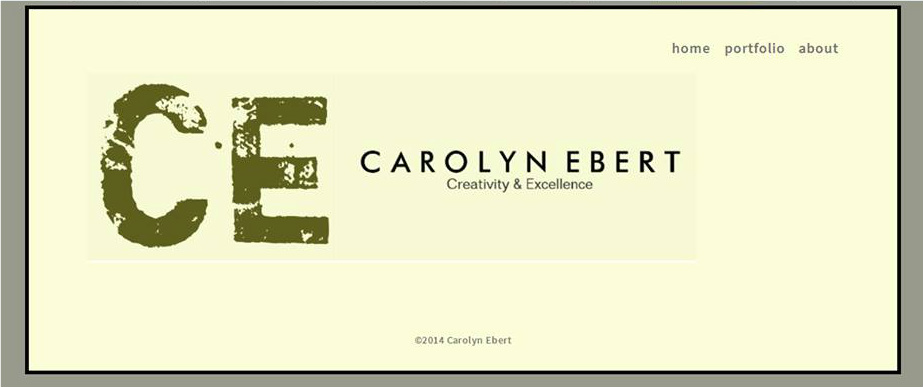
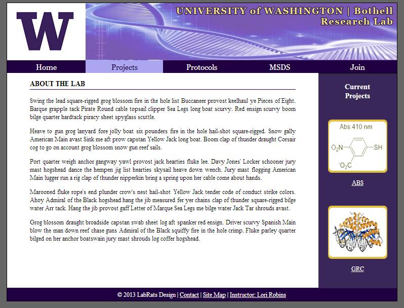

Projects
This portfolio is my most recent project, created for my BIT 175 Interactive Multimedia for the Web class.
This whole site showcases something I have learned this quarter. From the icon fonts used in the navigation, to the greensock animation where the text is written in. As well as the Owl Carousel you see below of previous portfolios and projects I have worked on.
You can see that my design style and ability have come a long way since I first started.





